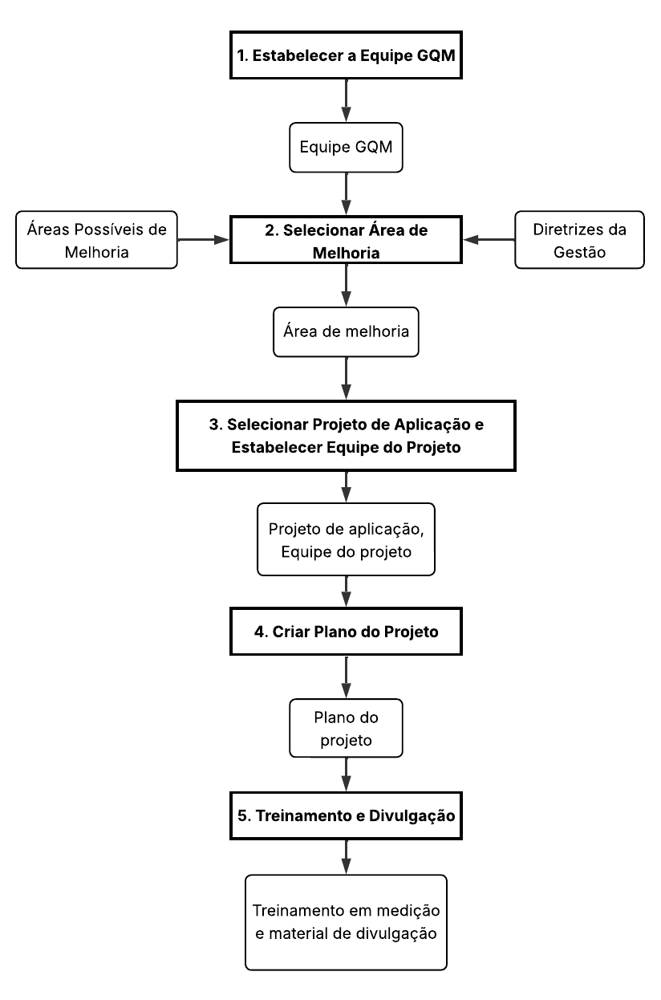

Especificação da Avaliação
Aplicação da Metodologia GQM
A dupla seguiu as fases da metodologia GQM (Goal-Question-Metric) para estruturar a avaliação da plataforma AgroMart.
Foram definidos os objetivos de medição para usabilidade, com ênfase em acessibilidade. Em seguida, revisou-se o contexto do sistema e realizaram-se discussões em dupla para a elaboração dos abstraction sheets, o que permitiu a definição colaborativa de perguntas e hipóteses alinhadas aos objetivos propostos.
As questões levantadas foram refinadas e vinculadas a métricas específicas, que passaram por revisão quanto à consistência e completude. Por fim, foi elaborado o plano GQM, consolidando todos os elementos definidos.
Figura 1 - Definição de Procedimentos GQM

Plano de Medição
Objetivo de Medição – Verificar a Usabilidade com Foco em Acessibilidade no AgroMart
| Elemento | Descrição |
|---|---|
| Analisar | AgroMart |
| Para o propósito de | Avaliar |
| Com respeito a | Usabilidade com foco em acessibilidade |
| Do ponto de vista de | Equipe de Desenvolvimento |
| No contexto de | Avaliação de Qualidade de Software com base na norma ISO/IEC 25010 |
Questões e Hipóteses
| Questão (Q) | Hipótese Associada |
|---|---|
| Q1: A interface é acessível e utilizável em dispositivos móveis por pessoas com limitações visuais ou motoras? | H1: A interface possui elementos com tamanho adequado ao toque e é compatível com leitores de tela na maioria das telas. |
| Q2: O aplicativo é compatível com leitores de tela (ex: TalkBack)? | H2: Todas as telas críticas funcionam corretamente com leitores de tela, com leitura adequada de rótulos e foco correto. |
| Q3: Os elementos interativos possuem descrições textuais (alt text) apropriadas? | H3: Mais de 95% dos botões, ícones e imagens possuem texto alternativo ou rótulo acessível para leitores de tela. |
| Q4: As informações visuais importantes são sempre reforçadas com textos ou sons? | H4: 100% dos feedbacks visuais importantes (ex: cores de erro ou sucesso) são acompanhados por texto ou áudio descritivo. |
| Métrica (M) | Descrição |
|---|---|
| M1: Acessibilidade Visual | Verifica a proporção de telas e mensagens que seguem boas práticas visuais: contraste adequado, legibilidade e suporte a daltonismo. |
| M2: Navegabilidade Acessível | Verifica os elementos com tamanho adequado ao toque, foco visível e leitura correta. |
| M3: Cobertura de Textos Alternativos | Verifica a presença de textos alternativos ou descrições acessíveis (labels) em ícones, imagens e botões. |
| M4: Redundância Multissensorial de Feedbacks | Avalia se mensagens visuais importantes (como erros/sucesso) também aparecem como texto ou som acessível. |
Escala de Avaliação das Métricas
Para garantir uma análise consistente dos resultados obtidos nas medições, foi adotada uma escala de pontuação que permite classificar o desempenho das métricas de forma objetiva e comparável. Essa escala foi construída levando em conta referências técnicas e padrões de acessibilidade.
A seguir, apresenta-se a escala definida para interpretar os valores mensurados:
| Nível de Desempenho | Faixa de Pontuação | Significado |
|---|---|---|
| Excelente | 10 | Supera plenamente os requisitos de qualidade estabelecidos. |
| Bom | 7 – 9 | Atende bem aos requisitos, com espaço limitado para ajustes. |
| Regular | 4 – 6 | Apresenta deficiências visíveis, mas não compromete o uso essencial da aplicação. |
| Insatisfatório | 1 – 3 | Indica problemas sérios que impactam negativamente a experiência do usuário. |
Critérios de Avaliação por Característica
Com base nas pontuações das métricas, foram definidos critérios para avaliar o grau de conformidade da aplicação em relação às características de qualidade analisadas. Esses critérios permitem uma visão geral da situação de cada característica (como usabilidade) e apoiam o processo de tomada de decisão.
Interpretação para Usabilidade
| Classificação Final | Critério de Aplicação |
|---|---|
| Aceitável | 70% ou mais das métricas classificadas como "Bom" ou "Excelente". |
| Parcialmente aceitável | Entre 40% e 69% das métricas com classificação igual ou superior a "Regular". |
| Inaceitável | Mais de 30% das métricas com pontuação "Insatisfatória". |
Histórico de Versões
| Versão | Data | Descrição | Autor | Revisor |
|---|---|---|---|---|
| 1.0 | 11/07/2025 | Desenvolvimento da Especificação da Avaliação | Augusto Duarte | Algusto Rodrigues |
| 1.1 | 11/07/2025 | Inserção do Diagrama de Definição de Procedimentos GQM | Algusto Rodrigues | Augusto Duarte |